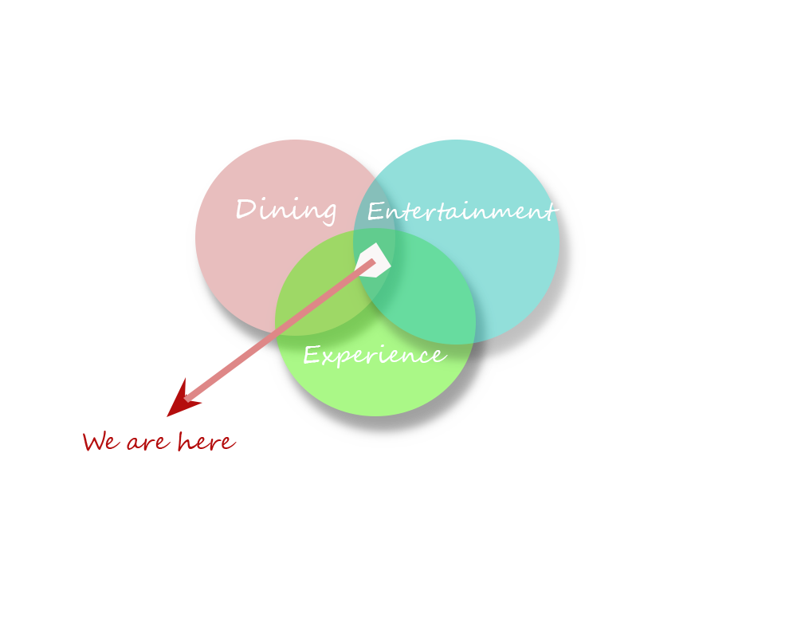
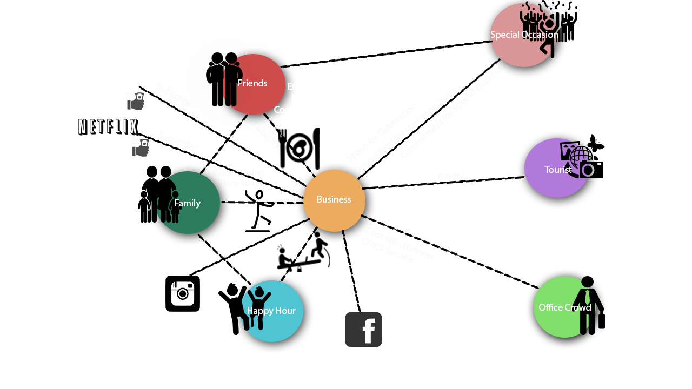
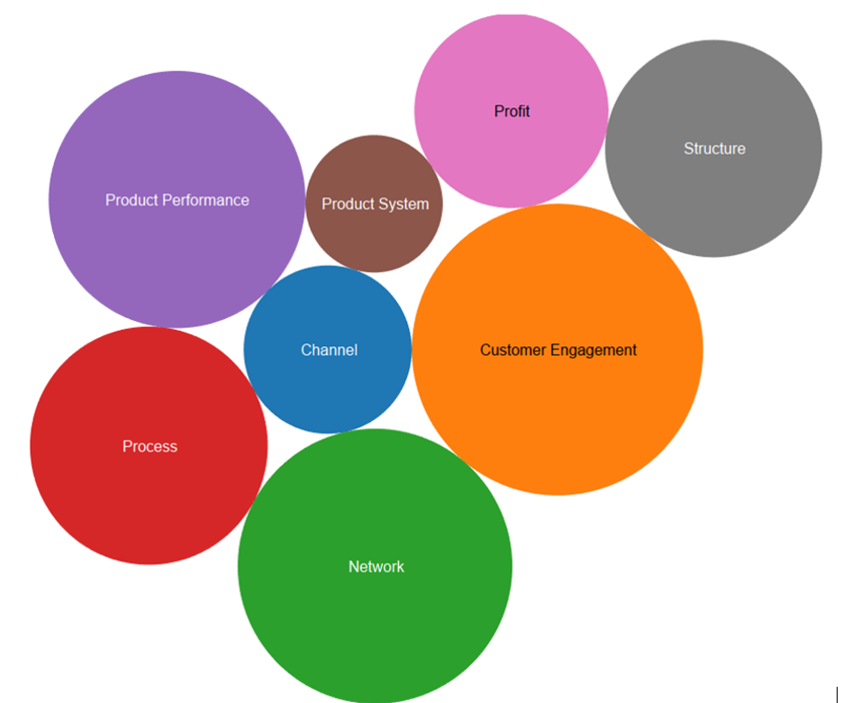
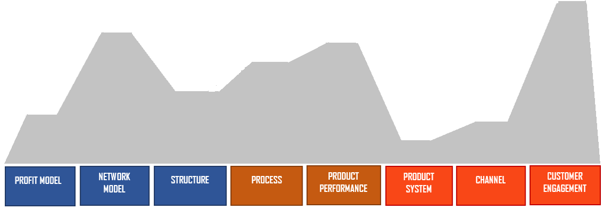

The heart and soul of a customer lies in the wellness of health and reflects through the satisfaction in smiles. We came up with this dining scenario while discussing between us and asking questions to ourselves: what is the need of it? Whether it is sustainable in the current trend or not? Why are we doing this? And at last after doing survey and keeping user expectations in our mind, we got these terrains such as Dining memories,Unique Experience, and Entertainment
Terrains
Value Webs
10 Types of Innovation
 Value Proposition
For:-All age groups who are fun and food loving!!!
Who:-are bored of regular dining experience.
Our Product:-Unique Dining Experience
That Provides:-Different types of Cuisines and Unique experience which includes movies, music and games.
Unlike:-Any other dining place that provides only food.
We:-Integrate Unique Experience and entertainment with dining
Life is too short for just food, make people happy, have some fun and be No 1.
Use a spacebar or arrow keys to navigate